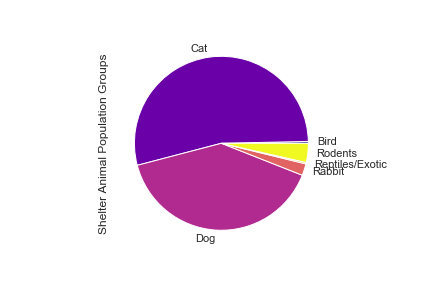

Understanding the Animal Population Mix
Some species are at greater risk of surrender or stray capture than others.
Dogs and cats make up the two largest population blocks in this facility. This is fairly predictable, given that these are the two most common household pet types.
Cats actually outnumber dogs, which can be surprising to some, as third party animal rescue/adoption efforts for dogs can have a higher profile in some areas. This can give the perception that there are more dogs in shelters, when really there are just more groups trying to rescue them.
Exploring the animal types and the intake reasons together can expose some interesting trends.
Is animal age a factor in intake?